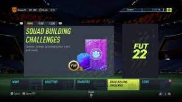

fifa er en fotball basert spill med mange spill moduser, det kommer mer om de mest populære modusene under.Det finnes totalt 29 fifaer men det ble mer populært etter fifa 2000 kom ut.Det kommer ut ny fifa vært år og den nyeste utgivelsen heter EAFC 24 og grunnen til at den ikke heter fifa 24 er at EA sports sin partner skap med fifa er avsluttet og de fikk ikke lov til å bruke navnet fifa lenger så EA valgte EAFC24 isteden.
Ultimate team
ultimate team er at du kan lage ditt egen fotball lag med ekte fotball spillere som er aktive og legender som har lakt opp som kalle icons i spillet. spillerne for spesiale kort som de for hvis de spiller bra i virkeligheten, du spiller også online mot andre motstandre.den er også den mest populære modusen i fifa.
hvordan ser egentlig fifa ut?

mer info om EAFC24
dribble turturial
over ser du en turturial på hvordan man gjør basic dribblinger på eafc24